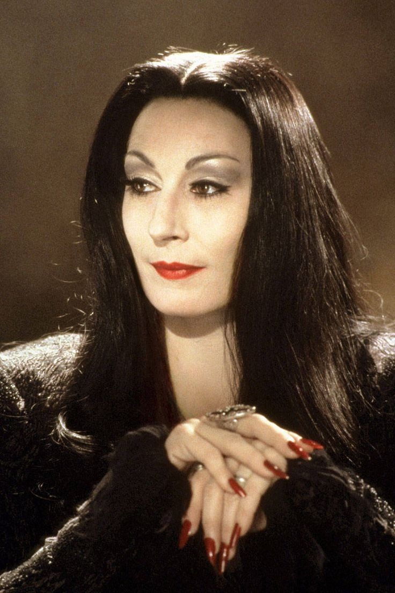
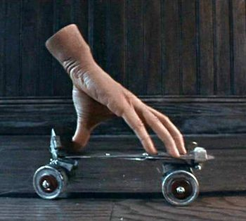

| Mortícia Addams | Imagem |
|---|---|
| O nome da personagem já revela um pouco sobre a personalidade dela. Isso porque Morticia tem uma pele muito pálida, o que contrasta com o longo cabelo preto e as cores escuras que ela usa. Ela e a esposa de Gomez e mãe de família, no mais ela ama a sua roseira da qual arranca as rosas e deixa somente os espinhos. |  |
| Wandinha Addams | Imagem |
|---|---|
| A filha dos Addams pode ser representada em varias fases de sua vida de acordo com a adaptação. No entanto, ela sempre tem alguma característica como gostar de histórias de homicídio, brincar de tortura com seu irmão. Alem disso ela não se interessa por nada que as meninas da sua idade gostam. |
|
| Pugsley Addams | Imagem |
|---|---|
| Irmão de Wandinha o garoto sofre torturas da sua irma (mas nada macabro). Alem de sempre se envolver em confusões o garoto conhecido por criar animais exóticos como lagartos e aranhas. | 
|
| Gomez Addams | Imagem |
|---|---|
| Pai e marido apaixonado. Sendo assim, Gomez frequentemente tem que abrir mão do que quer para agradar a esposa e os filhos. Além disso é sádico e tem um hobby peculiar: tortura. | 
|
| Tio Fester | Imagem |
|---|---|
| Atrapalhado e superengraçado, Tio Fester ou Tio Chico é tio de Mortícia e um grande amigo de Gomez. O personagem careca e já com idade avançada é muito conhecido por dormir de cabeça para baixo e saber tudo sobre explosivos. (Sobre o parentesco a muitas divergências sobre, em algumas versões como a do filme falado acima ele é irmão de Gomez e em outras tio de Morticia) Imagem (tio Fester) | 
|
| Lurch (mordomo) | Imagem |
|---|---|
| Esse é o mordomo dos Addams. O nome dele também é sugestivo, já que seu jeito de andar chama atenção. Ele é tão desengonçado que parece um pouco o monstro clássico Frankenstein. Apesar de falar muito pouco, ele popularizou o bordão “Chamoooou?”, toda vez que alguém o solicitava. | .jpeg)
|
| Vovó Addams | Imagem |
|---|---|
| Já essa personagem lembra um pouco a representação da bruxa: corcunda, descabelada, capaz de fazer feitiços e poções. Ela é a mãe de Mortícia e ficou famosa por sua especialidade culinária: miolos de morcego fritos. | 
|
| Mãozinha | Imagem |
|---|---|
| Trata-se, literalmente, de uma mão decepada com vida própria. Mesmo não se comunicando por palavras, ele fazia gestos e era carregado dentro de uma caixa pelos demais personagens. |  |
| Primo coisa (ou primo it) | Imagem |
|---|---|
| Primo da família Addams, é uma criatura super peluda e que tinha influência dentro do governo norte-americano. Engraçado e meio desajeitado, It aparecia as vezes nas histórias. | .jpeg)
|